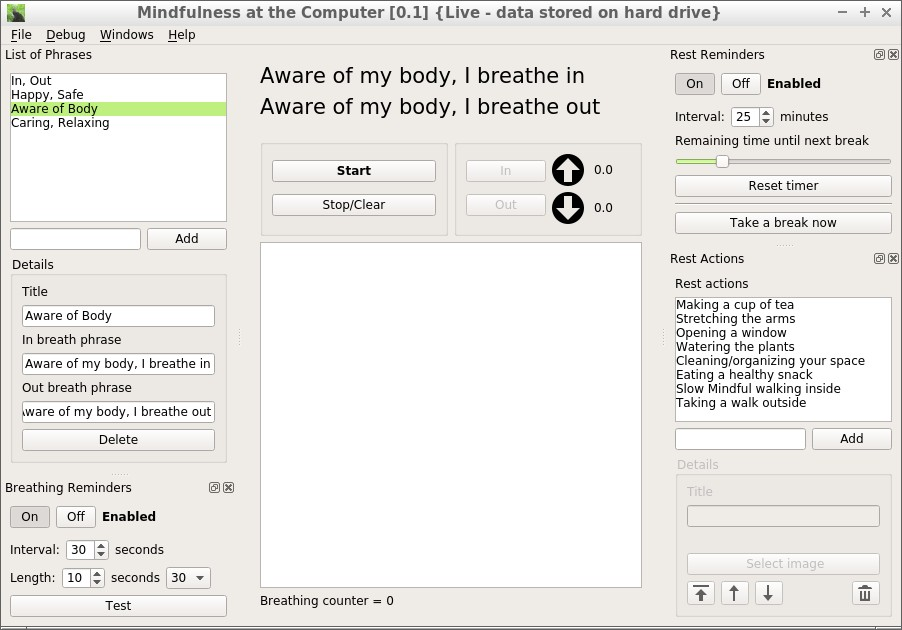

Mindfulness at the Computer
Features/About
A mindfulness and self-care application for people spending many hours in front of the computer
- Following your in-breath and out-breath with a graph displayed
- Breathe with text help ("Breathing in I know I am breathing in") and write your own texts
- Receive notifications to remember to be mindful of breathing while the application runs in the background
- Get reminders when it's time to take a break from the computer while the application runs in the background

Mindfulness at made by SunyataZero and is free software, licensed under the GPLv3. You can reach him at tord (dot) dellsen (at) gmail (dot) com